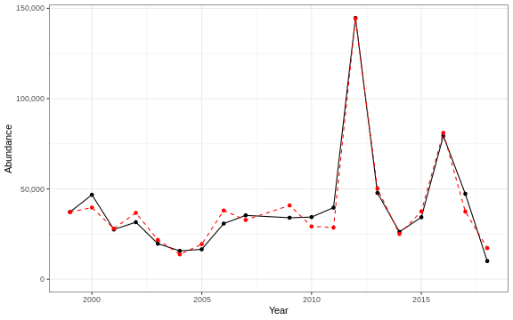

3.2 Recruitment
3.2.1 Generalized linear model
This is an exploratory fit of a poisson GLM. Initial covariates were included based on statistical significance at a Bonferroni-corrected alpha in the linear correlations shown in this report. Final covariates were chosen by forward stepwise AIC selection of additive GLMs.
| rnames | Estimate | Std. Error | z value | Pr(>|z|) |
|---|---|---|---|---|
| (Intercept) | 12.3 | 0.0868 | 142 | 0 |
| WEEKLY PPD MEDIAN week 12 gCarbon m 2 Day |
4.85 | 0.0864 | 56.2 | 0 |
| winter OI SST Anomaly Black sea bass north spring degreesC |
-0.222 | 0.0119 | -18.6 | 2.82e-77 |
| T peak | 0.539 | 0.00649 | 83.1 | 0 |
| MONTHLY PPD MEDIAN month 03 gCarbon m 2 Day |
0.379 | 0.142 | 2.67 | 0.00747 |
| WEEKLY PPD MEDIAN week 04 gCarbon m 2 Day |
-2.97 | 0.0681 | -43.6 | 0 |
| thecos 100m3 annual | 0.657 | 0.0102 | 64.6 | 0 |
| WEEKLY PPD RATIO ANOMALY week 12 |
0.619 | 0.0518 | 12 | 6.29e-33 |
| cumulative intensity degrees C annual mean |
-0.0207 | 0.000245 | -84.5 | 0 |
| cumulative intensity Black sea bass spring degrees C annual mean |
0.0218 | 0.000269 | 81.1 | 0 |
| T mean | -0.802 | 0.0149 | -53.7 | 0 |
| WEEKLY PPD RATIO ANOMALY week 11 |
-2.16 | 0.0546 | -39.7 | 0 |
| winter OI SST Anomaly Black sea bass spring degreesC |
0.404 | 0.0111 | 36.3 | 1.68e-288 |
Dropped coefficients: winter_OI_SST_Anomaly_degreesC
